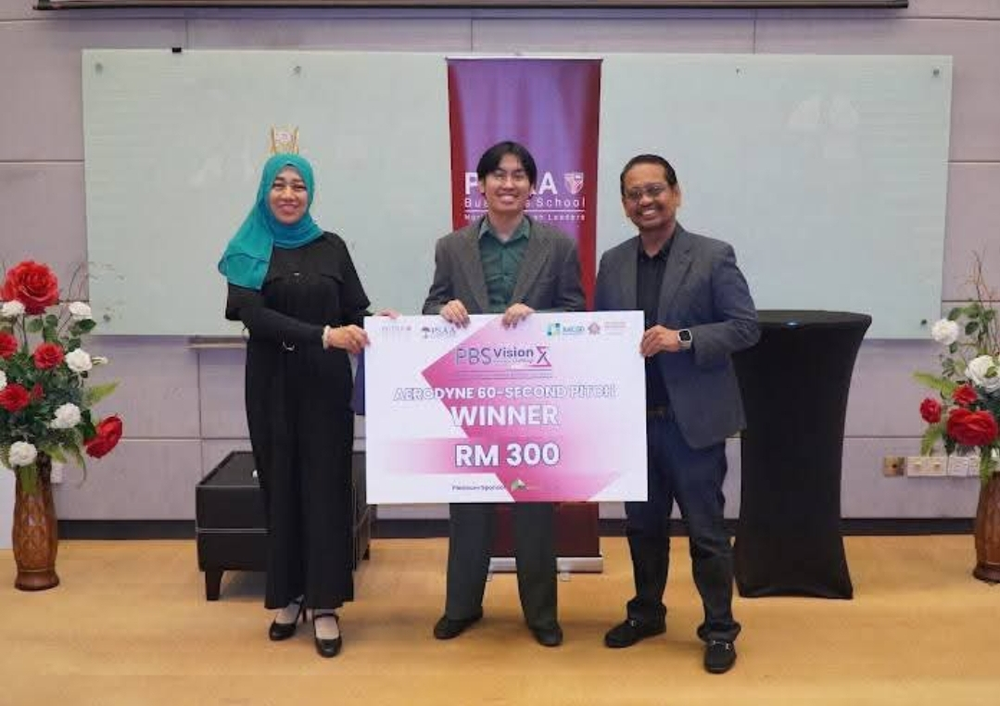
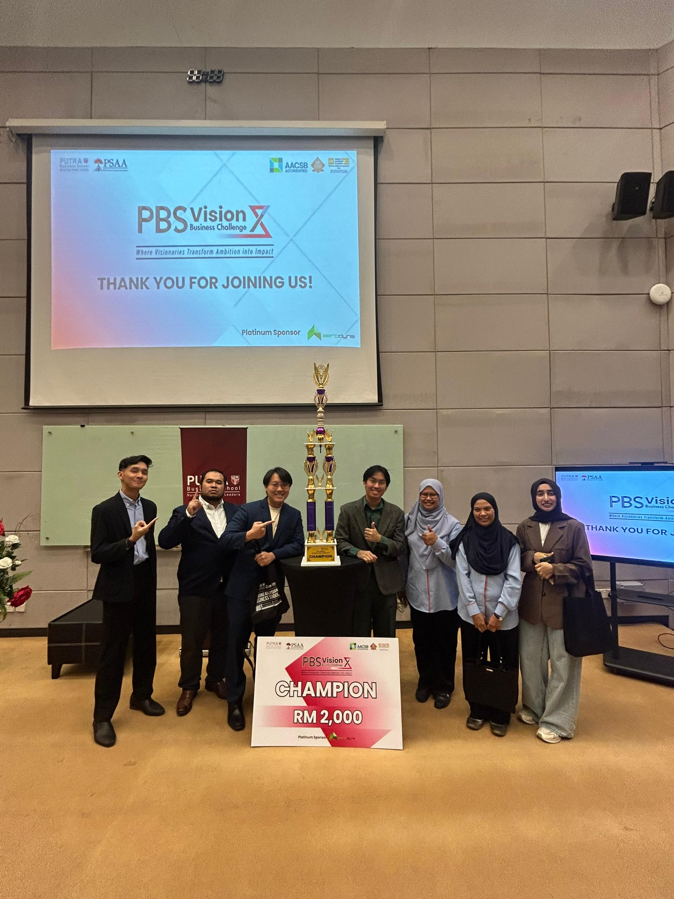

To build a world where mainstream materials are regenerative, scalable, and nature-grown.


Endorsed by
Strategic partner
Story
A cleaner world should not be a distant ideal. It should be designed into the materials we use every day.
Mycora Biotech was born from a question Dan could not let go of: why had society become so willing to live with waste everywhere? In cities, in small towns, in roadside spaces and open land, he saw the same pattern repeated - discarded material scattered across the environment, normalized by convenience, and sustained by industries built on disposability.
Rather than accept that reality, Dan chose to build against it.
He believed the fight against waste had to begin earlier, not at the landfill, but at the material itself. That belief became the foundation of Mycora Biotech: a venture built to replace unsustainable conventional materials with regenerative alternatives, beginning with mycelium-based industrial packaging. In doing so, Dan set out to become earliest pioneer to commercialize and internationalize this technology in Southeast Asia.
Through connections forged at Putra Business School, Dan unlocked an extraordinary path forward, working closely with NIBM, Malaysia's national biotechnology institute and a key force in the nation's biotech frontier. Together, they began developing Mycora's products while advancing an IP partnership around BioProtect, a next-generation coating designed to improve durability in humid real-world conditions done by no other.
The market responded early. In Mycora's first national business competition, VisionX, the company won 1st Place across every category it entered, including both the 60-second pitch and the team grand final. That breakthrough immediately drew the attention of CEOs and owners from major companies, including Aerodyne and Talenta, creating real pathways for pilot validation in live operating environments and bringing Mycora closer to TRL 7.
But this is only the beginning.
Mycora is being built not just as a packaging company, but as the start of a larger movement: one that commercializes sustainable solutions to replace wasteful conventional methods, and helps reshape how the world thinks about performance, protection, and progress. The mission starts with mycelium packaging for industrial applications. The vision reaches much further... toward a future where better materials make for a better world.
Danish Baaden
CEO & Founder